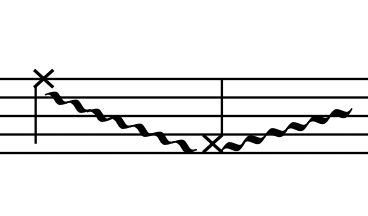

4-03 free cookies updates
Guitar Q/A for Christian
- Bar 1 : the distortion FX is only appeared for this sound. Yes I'll add a more clear instruction for pedal changes!
general use of effect pedals:
- reverb FX is assumed for a default E-guitar sound, but we might need to adjust later for a different acoustic condition in the performance space
- delay FX is called for tapping sound and will be used in the last section
-
distortion FX is only used for a few special sound events. (bar 1, bar .. )
like this one in bar 1
the one with a X has a more firmed tapping, wheareas the doted one has a softer and faster touch.


but maybe this isn't so intuitive, I'll probably just change all of them to X and write 'firm tapping' and 'soft tapping' then.
- Bar 3: yes will write out 'Scratch'!
- Bar 4: same, i wanted it to be similar as previous soft/fast tapping, but with a shaper tone.

- Bar 5: Yes, i'll write it as pick drawing and scratch
- Bar 6: Yes, i'll add pedal on/off and the last beat is a bowing action on lower strings.
all the wavy lines in guitar part indicate the same bowing technique
- Bar 8: Yes it's another soft/fast tapping.

I wanted to use the curved stem to indicate a varied speed/dynamic for this tapping event. but it needs to accelerate and disappear till the end.
I'll come up a better notation for this one.
- Bar 11: yes it's a fast scratch on the 6th string.

also need to make an addtional note about this sound: the scratch needs to be audible.
Maybe between bar11-13, would you think there's too many techniques, too condensed ?
could you please send me some bar numbers that you think it would be too much to handle ?
I'll check each of them and make adjustments later.
- Bar12: You're right! The ocatave is wrong! I'll fix it!
For you infomation, please use the marked fret number as your main reference. i only used very few pecial chord shapes, most of them are just default notes in a fret. the sliding+chord action (second chord) in this bar is probably the only special chord shape in this piece.
the first chord is a special gesture action created by using the soft spring object.
It can be played with open string, so all the notes are just default open string notes
the second chord is a press and slide action. Only 2,3,4 string need to be pressed down for the left hand. After a sharp pluck, the left hand will slide towards 3rd fret.
- Bar 13: You're absolutely correct! I mistakenly added one more ledger line for the bass G note
The X is not in the chord, i just wanted to indicate a percussive noise here. I'll change this to a more clear way. maybe move the X to be the G note.
Again, if you see a chord has six notes, they're default notes in a fret.
If theres discrapancy between written notes and fret numbers, please use the fret number as your main reference.

- Bar 14: Yes, it's a grid noise event created by quickly gliss the hard spring on the fingerboard.
It sounds like a scroll action. but you're right, it's just a gliss with hard springs.
Sorry about the confusion, I'll make things more clear to avoid this.
The grid noise is followed by a string scratch noise, which you need to create some friction noise with your lefthand.
It's a same sound type as bar2. I tried to use small sized notehead to indicate dynamic difference.

For example in bar 2, where this same action happened
the smaller note may not be an intentional sound, but activated from stopping previous string scratch action.
I wanted to de-emphasize the first A so that you don't have to worry too much for making a coherent sound between string scratch and the ending hammer sound.
- Bar 15: In Bar 15 (and bar2, bar19), the first A is a touched note and probably very soft. The second Ab is created from a hammer tapping action. I used H on the top to indicate a finger hammer action, and X notehead to indicate a percussive noise. The percussive noise is not a intentional sound, but part of the hammer action.
I consulted a guitar notation guide and there seem to be different approaches. one approach suggests that only H is enough, another uses both X and H to indicate hammer action.
- Bar 20: You're right! The harmonic on the 3 string V fret is a G. I forgot to change this one cuz i was also considering different harmonics.
This is a repetitive sound event and flexible to change. You can use any other high-pitched harmonic sound you like.
Here I just wanted to have a very high harmonic sound to resonante for a bit and stand out from everything else
The current G sound is not as loud and sharp as I expect, so i'd like to explore an alternative option.
Yes! the tapping is open string
- Bar 23: Yes! will add dist FX on/off.
Yes, harmonic is on the 3 string V fret, same as bar 20. again, i used only one harmonic for the whole piece (maybe it's a bit too boring?), we can try to add some more maybe. but for now, you just need one harmonic sound for all high-pitched harmonic note
- Bar 25: Yes tapping with the left hand while brushing with the slide RH.
it doesn't have to be very loud as long as it's audible.
- Bar 28: yes tapping F#. This note is flexible to change. The situation in this section is that guitar and clarinet will create some continious textures together, but there's occationaly some random points emerging from the continious texture. This can be a tapping sound or some other very trancient gesture. You're welcome to explore and bring new ideas. Bar 25-28 can be freely extended if you feel it needs to be longer.
- Bar 30: no worries. i just wanted to have a contrasting high-pitched harmonic sound as an ending. Here you just need one continious gesture sound with the soft string and end with a harmonic sound.
I can show you the gesture action later and it's very easy to do. It gets much more complicated with symbols when notating gesture sound like this.
Here I wanted to show you the starting point, contacting area, movement, pressure, and a ending gesture. It starts from the higher string, gradually press down the spring to touch all the strings and draw on it, then move out and end with the hight string bowing again. But it's still very hard to represent them efficiently in notation. It's also not something that can be easily quantified and has a lot to do with haptics and feelings.
This is an audio demo for bar 30
- Bar 31: it's a flexible tapping. I just wanted to have some presence of tapping sounds. The actual content is open.
- Bar 32: It's one single gesture. a string bowing action similar to bar 30
The wood scratcb part can be very minumum. it's the edge part of the fingerboard. Here I just need a contrasting non-pitch noise to break from previous pitched sound. If instrument is a concern, we can replace the wood scratch with a dempened string scratch, i'll try to do some experiments to find a right sound and let you know later.
- Bar 34: Sorry, the right dot is in a wrong position. It's the area between the first and second pickup on my guitar. you can explore on your own, it's flexible. Here I just wanted to have some interesting clicking sound. For your infomation, all clicking sound and/or bubble like clicking sound are created by tapping around the pickups. There are variety of clicking sound can be created by altering tapping pressure, position and source (nail, pick or finger). Yes, this tapping is in my demo video. I didn't use any pedal effect for this sound, it was just default reverb. but we could explore other possibilities.
- Bar 35: this is a string bowing. same as previous weavy lines.

they're the same bowing action! they just have different duration and the up bow, down bow action is flexible. See the video 'fingerboard bowing' for more reference
- Bar 38-42: it's mostly gesture sound and they're all simple gestures. they're created from same gesture, but different speed and dynamics.
these four are variations of the smae gesture movement
the short break in a rhythmic structure is achived by slightly shaking the soft spring while bowing
the last single note is bowing the higher strings. (by making an angle to bow only the higer strings, or the 1st string only)

- Bar 45: Ok, i'll find a different way to write it. it sounds like this
the bending happens naturally when you hammer hit a fret with a slight pressure. I can demo in a video later for this. for the last two beats in Bar 45: I just need to percussive click, the last one is louder than the first and is an emphasis. As long as you can make a contrast between two succesive noise. that's all i need for this two beats. everything together in bar 45 sounds like this :
- Bar 46: this first sound is a pecussive sound that can enhance the slap from clarinet. I'll fix this to make it more clear. the second sound is again a gesture similar to bar 40. It sounds like this:
It's a simple gesture that is hard to represent in notation. I tried my best to lineate the emphasis points I want in a contour, but it looks more complicated than it sounds or plays.
- Bar 47 : last two beats are similar to the ones in bar 45. I just wanted to have two contrasting percussive noise. they sounds like this:
- Bar 49 : same as before, it's a variation from the same gesture that has a bit of shaking - Bar 50 : find a tapping around the pickups. I'll fix the notation. In general, i have a lot of short tapping fragments in different places of the piece. If it's too tedious to follow my suggested sound direction. you can think of all tapping/clicking sound as one type and try to create some interesteing variations on your own. It would be great to have your input as part of the piece.
Conceptually, the piece is trying to make a story between cookies and clicks, which are both metaphorical concepts that are connected to our daily interaction on the internet. all the percussive sound used in this piece are connected to the click metaphor.
- Bar 57: no, this is just a pluck action with a distorted tone, becasue the mini string is attached to the instrument.
it sounds like this:
- Bar 61: it's a gliss tone between the notated range, like a fluctuated pitch. this sound is flexible and can be changed.
I don't have a guitar sound example for this. but it may sounds like this :
You can explore and suggest new ideas. In this mindless cookies section, a lot of gliss gesture are used expecally in clarinet to help portrait different free personalities of cookies. It’s like a curious person aimlessly wondering in a space with drunk body movements. so as long as you understand this scenic setting, you're welcome to go further and bring more creative ideas to the table.
- Bar 62: It's one single gesture continues from Bar 62 to 63. this is the mindless scroll gesture, the main sound character in this section.

it sounds like this :
it was very hard to notate each gestures, they're very simple to do but very hard to notate.
In this section i used the visual graphic to indicate each mindless scroll sound. so whenever you see this symbol, it's just a mindless scroll action, which you can see more clearly how to do it from the video demo. by changing dynamic and speed, you can make variations of the same gesture, which is exacly what i did for this section.
- Bar 66: yes only slide slowly, I'll fix the marking. use fret number as main reference. the notes part are just default notes of each fret. it sounds like this :
- Bar 67: same single mindless scroll gesture, with an emphasized accent in the end. it sounds like this:
- Bar 70: will think about this and make some changes. I'm thinking probaby it's ok to use acoustic guitar until Bar 70. and add some clarinet air sound to make more time. Could you let me know how much time will be enought for instrument change?
- Bar 71: I'll fix it. Use fret number as main reference.
- Bar 72: flexible. your choice. it would be nice to have a high-pitched beep sound similar to noticification sound effects. but feel free to explore and suggest solutions.
- Bar 72-80: it's a different scrolling. Yes, feedback received, will make a technics list! I'll record a video later to show you this effect. But for quick infomation. it's created by lightly dropping the slide on the pickups area, using gravity (so the instrument will be lay down).
- Bar 92: I'll check this and make time to change it.
- From bar 93: because there's maximum delay level for this section, a single and light tapping will result in a sequence of sounds. I created all the rhythmic pulse by using my palm to tap the pickups area. I'm not sure if this is damping ?